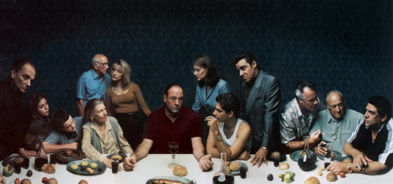

Escenarios y Localizaciones
La mayoria de los rodajes exteriores de la serie fueron filmados en Nueva Jersey, mientras que los interiores ,incluyendo la mayoria de los rodajes en la residencia de los Soprano, la trastienda del club de striptease Bada Bing! y la oficina de la psiquiatra Dra. Melfi fueron grabados en los Silvercup Studios de Nueva York.
La carniceria, uno de los lugares favoritos de los mafiosos en la serie, era conocida en el episodio piloto como Centanni's Meat Market, una carniceria real en Elizabeth, Nueva Jersey. Despues de que la serie fuera contratada por HBO, los productores arrendaron un edificio en Kearny, Nueva Jersey.Durante el resto del periodo de produccion, este edificio fue utilizado para escenas de rodaje tanto en interior como en exterior Satriale's. Cuando la serie finalizo su emision, el edificio fue demolido. El Bada Bing!, un club de striptease del que Silvio Dante era propietario en la serie, es en realidad un club nocturno en la Ruta 17 en Lodi, Nueva Jersey.
Los exteriores e interiores (excepto el cuarto que servia de trastienda) fueron filmados en el propio local. El club actual se llama Satin Dolls y ya existia antes de que la serie comenzara. El club continuo con su funcionamiento habitual durante los ocho anios que duro la serie, pero se llego a un acuerdo econoico con el propietario del establecimiento previamente. El responsable de escenarios, Mark Kamine, aseguro que el propietario fue "muy amable", pues mientras la serie permanecio en antena "no hubo ningun conflicto que interfiriera en su negocio". Las escenas que tenian lugar en el restaurante Vesubio, propiedad en la serie de Artie Bucco, se filmaron en el primer episodio en un restaurante llamado Manolo's, situado en Elizabeth. Tras el incendio del Vesubio, dentro del contexto de la serie, Artie abrio un nuevo restaurante llamado Nuovo Vesubio, cuyas escenas exteriores se filmaron en Punta Dura, un restaurante real de Long Island City, en Queens.
Por otra parte, los exteriores de la residencia de ancianos Green Grove, donde Tony lleva a su madre Livia, se grabaron en Green Hill Retirement Home, una residencia de ancianos de West Orange. Todas las filmaciones exteriores, y algunas interiores, de la casa de los Soprano fueron realizadas en una residencia privada en North Caldwell, Nueva Jersey.